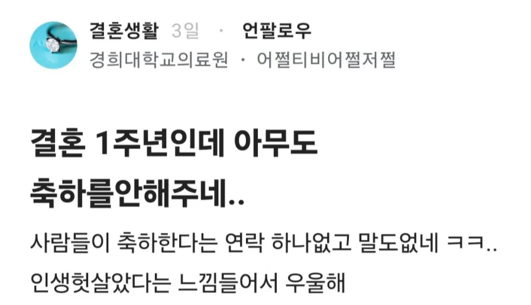

'아무도'...?

'아무도'...?
아니아니 남편도 말이없다는 뜻이잖아
결혼기념일에 있어서 남편은 '사람들'로 뭉뚱그릴 그런 관계자가 아니지
남편도 안챙겨서 서운한거면
사람들 뒤에 '남편조차도' 라거나 '남편마저' 처럼 따로 붙였을듯
ㄹㅇ
아니 일부러 결혼식을 일반 행사처럼 묘사해서 남편이 결혼식 까먹은걸 비꼬는 글이잖아..
남들은 그냥 봐도 이해하는데 이걸 일일히 설명을 해줘야 하나;
의료원에 환자로 입사함?
남편 오늘
시체로 발견되겠네
배우자마저 안한거면 rip
남편은 이미 귀신이라 답이없나 ㅋㅋ
와 씨발 까먹을뻔 했는데 기억났네. 이벌달에 결혼기념일이 있었구나...ㄷㄷㄷㄷ 좆될뻔....
귀신될뻔했네ㅋㅋ
넌 개드립pro요금제 가입해라
얼마임? 시발 당장가입한다
한 번은 살려드릴테니 잘 합시다 두 번은 없어요

있었구나? 지난건아니지?
다다음주임 ㅋㅋㅋ
저 글 또 볼뻔 했네
오메데토
뭐 자기가 다른 사람 결혼 기념일 제삿날 자식 생일 그런거 다 챙기는 사람이면 섭섭할수도 ㅋㅋㅋ
남편이 이제 없다고 하내요
근데 결혼기념일이 여자한텐 엄청 중요한 날임?
왜일까
이거 뿐만 아니라 왜 예수님생일에 개호로잡년들이 심지오 교회도 안다니는 년들이 지랄염병을 떠는지 존나 궁금함
걍 "내가 선물받는 날"이정도로 단순하게 생각하면 고개가 끄덕여지기도 하고
그렇게 중요하면 본인이 주도하세요
아무도(본인포함)
결혼기념일은 본인의 부모, 배우자, 자녀말고 챙기는 걸 본적이 없다
근데 남의 결혼기념일을 일부러 연락해서 축하해주나?
전혀 그러는거 없는데